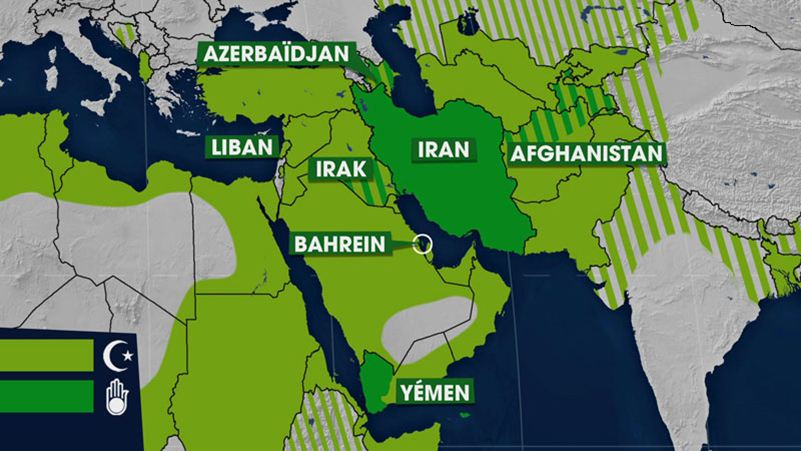
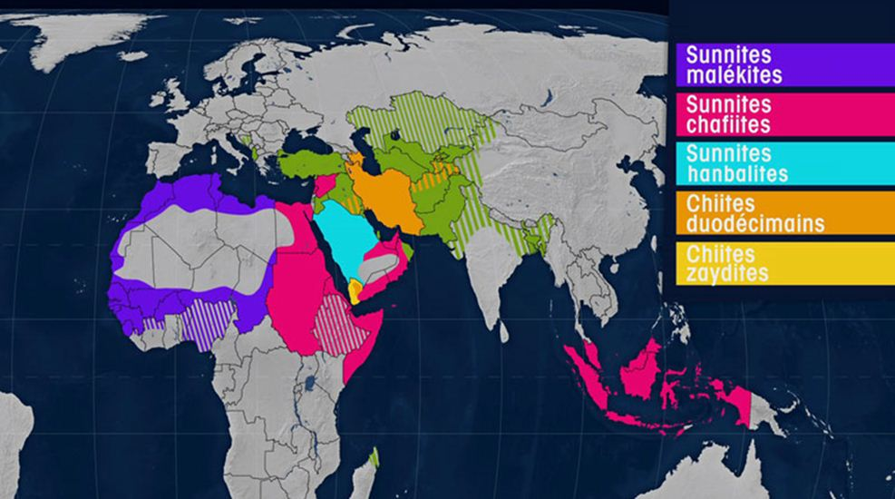
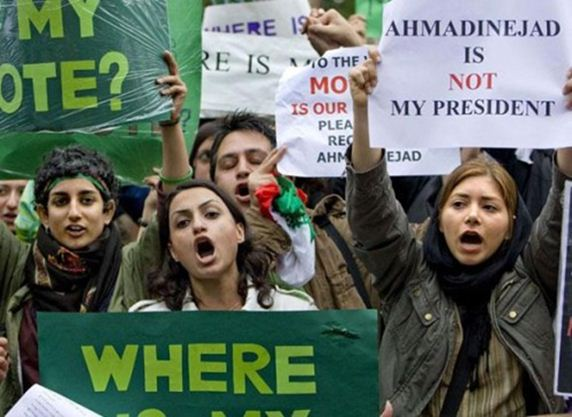
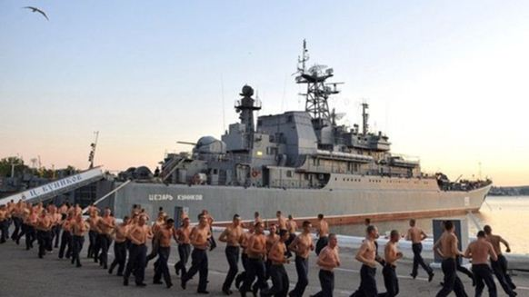
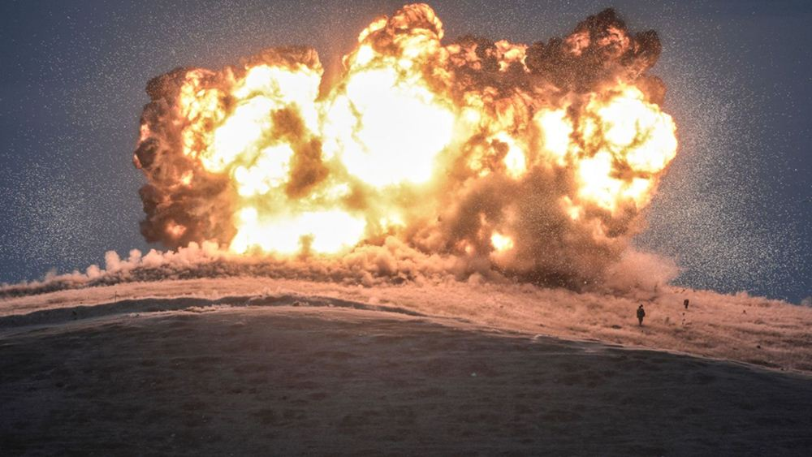

Les crises mondiales ont souvent été le reflet de crises économiques et idéologiques calquées sur des géographies bien définies. Aujourd'hui, les situations sont beaucoup plus complexes. On défend moins son pays qu'une vision du monde au sens propre. Ce qui se passe actuellement à travers la Syrie mais aussi l'Europe et le positionnement des grandes puissances vis-à-vis de ces complexités n'est plus seulement à expliquer sur un planisphère accroché à un mur car entrent en compte des problématiques historiques, religieuses, économiques, d'une telle complexité que nous en arrivons à des conflits à multiples dimensions. Nous pourrions prendre pour exemple les poupées russes.
La première poupée de base représente la poudrière, la seconde, plus grande, le catalyseur qui va faire exploser cette poudrière, la troisième poupée, le résultat global des deux autres. Nous verrons néanmoins qu'il peut aussi y avoir des courants alternatifs et transcendants, parfois utopiques, mais pouvant ponctuellement aller à l'encontre d'un scénario « futurible » tel celui que nous allons décrire pour le monde d'aujourd'hui et notre très proche avenir (globalement à l'écriture de cet article, 2016/2017).
Le terreau de base c'est un conflit ancestral religieux inter-musulman, principalement entre Chiites et Sunnites en plus de nombreux courants minoritaires alliés aux uns et aux autres, le sunnisme étant largement majoritaire dans le monde musulman. Ce n'est pas tant un différend religieux qui échappe souvent aux Occidentaux, de savoir, qui, des descendants directs de Mahomet ou de ceux désignés par lui sont les plus à même de représenter l'islam.

RÉPARTITION GÉOGRAPHIQUE DES SUNNITES ET DES CHIITES Il n’y a pas un islam, il y en a plusieurs. On voit sur la carte la répartition géographique des sunnites, puis la localisation traditionnelle des chiites, très majoritairement en Iran, leur lieu historique. Il y en a bien sûr en Irak, où les chiites représentent 65 % de la population du pays. Et en moindre proportion de la population, en Azerbaïdjan, au Bahreïn, au Liban, au Yémen, et en Afghanistan dans la communauté des Hazaras.
Il y a évidemment un « fond », un « relent » de « bonnes » ou « mauvaises » mosquées mais la réalité géopolitique et historique se défini plutôt sur un chiisme et des courants minoritaires plutôt nationalistes, du moins, attachés à leur terre (nationalisme chiite iranien) et un courant sunnite largement plus expansionniste, doublé du fait, qu'il est ultra-majoritaire dans le monde musulman. Cela ne veut évidemment pas dire que les musulmans sunnites sont, individuellement, des « colonisateurs », bien sûr que non, c'est juste que le courant sunnite représente dans l'esprit une sorte d'Empire musulman qui peut prétendre à s'étendre alors que le chiisme et autres courants minoritaires, eux, au contraire, sont attachés à leurs frontières. Au sein du sunnisme se détachent aussi des branches radicales d'une lecture ancestrale de l'islam, le salafisme, la wahhabisme. Il faut toutefois distinguer entre ceux qui vivent pacifiquement ces courants par choix personnel et ceux qui les imposent à autrui, nous entrons alors dans une phase expansionniste d'un sunnisme radical.
Le terreau de poudrière de cette première poupée russe vient surtout des alliances des Sunnites avec les puissances occidentales notamment Etats-Unis, mais, on l'a vu aussi avec la France via le voyage de François Hollande en Arabie saoudite en 2015.
Mohammad Reza Shah PahlaviIl faut ouvrir une première parenthèse, la parenthèse iranienne. Mohammad Reza Shah Pahlavi, le « Roi des rois », pour faire simple, n'a eu de cesse après la 2nde Guerre mondiale, que de tenter par tous les moyens d'asseoir une autorité qu'il pensait non-acquise - on l'a vu lors des fêtes pharaoniques qu'il donna en octobre 1971 à Persépolis entouré des Présidents et têtes couronnées d'une partie de la planète - alors même qu'il était déjà soutenu à bras-le-corps par les Américains. Il est vrai que c'était aussi une époque où il tentait une indépendance politique en se rapprochant également de l'URSS. Quoi qu'il en soit, son règne fastueux déboucha à la fin des années soixante-dix sur un grand mécontentement populaire de non-redistribution des richesses. Un Front national allant des communistes aux libéraux et passant par le monde étudiant se souleva contre lui. La révolution iranienne était en marche. Elle devint rapidement, notamment sous les coups médiatiques de son plus grand ennemi, l'ayatollah Khomeiny, une révolution islamique. Il ne faut pas en vouloir aux Iraniens d'avoir transformé leurs revendications populaires en soulèvement religieux intégriste à connotation chiite.
Pour deux raisons. La première, c'est que leur mouvement révolutionnaire de base a très vite été repris par les imams qui se le sont appropriés. La deuxième raison, c'est qu'il faut composer avec ce peuple et son histoire ; le chiisme, c'est sa culture de base. La revendication populaire de redistribution des richesses s'est alors naturellement muée en révolution chiite à consonance nationaliste iranienne. Mohammad Reza Shah Pahlavi avait largement ouvert l'Iran à la culture et au modèle occidental. Ce ne sont évidemment pas les Droits de la femme, l'éducation, la liberté religieuse, la liberté artistique qui furent à l'origine des troubles sociaux en Iran ou d'une mauvaise politique économique et sociale du dirigeant iranien, mais, en revanche, ce fut cette culture qui fut attaquée de plein fouet quand, du jour au lendemain, on chassa les Occidentaux dans les hôtels de Téhéran tout en brisant dans les rues les bouteilles d'alcool ! La culture occidentale fut le bouc émissaire du désarroi du peuple iranien car son dirigeant en était trop proche alors même qu'il se trouvait détrôné !
Maintenant, le sunnisme n'est pas plus ouvert à cette fameuse « culture occidentale »... Nous pourrions même dire qu'il en est encore plus hermétique ! Encore plus hermétique au XXIe siècle alors même que le peuple iranien, au sein-même de son pays, se mord doucement les doigts de sa propre révolution de 1979 en jouant clandestinement aujourd'hui du rock dans les caves et, en descendant, femmes et hommes ensembles, l'hiver, les pistes de ski. Il faut comprendre ici-même que l'Iran a toujours été un pays très ouvert.
Il a participé autrefois aux travaux de la SDN et le propre père de Mohammad Reza Shah Pahlavi, qui est décédé en 1944, avait déjà tenté de largement ouvrir son pays au monde extérieur, sans pour autant subir d'influence particulière, c'était une sorte de « tiers-mondiste » avant l'heure mais, quelqu'un du devant de la scène internationale. Aujourd'hui, les Iraniens ne rêvent que de jours meilleurs pour eux-mêmes dans leur « quotidien chiite » mais aussi d'ouverture économique sur le monde. La volonté de faire tomber les embargos et les accords sur le nucléaire civil le prouvent.
Ouvrons une deuxième parenthèse, celle d'une comparaison avec Bachar al-Assad en Syrie. La redistribution des richesses en Syrie (routes, écoles, hôpitaux, centres de loisirs..) évoque une dynamique de l'Etat vers son peuple beaucoup plus large et beaucoup plus moderne que le Shah d'Iran à son époque. La problématique principale c'est que l'opposition à Bachar al-Assad depuis 2011 est plus culturelle, religieuse, qu'économique au sens propre que l'Iran en 1979. L'opposition en Syrie est principalement sunnite. Cette opposition a largement été soutenue par Paris et Washington mais rappelons une chose essentielle, les accords de ces rebelles concernant la démocratie, l'assurance d'un Etat laïc et multiconfessionnel (il y a différentes branches de l'islam en Syrie mais aussi une communauté chrétienne très importante !) dans l'éventualité où ils auraient renversé le pouvoir syrien a été arrachée aux forceps... ! Avec l'armée russe en Syrie depuis peu, nous pouvons supposer que cela n'arrivera pas mais rien n'était acquis en ce qui concernait la fameuse « démocratie » ou « Droits de l'Homme » si chers aux puissances occidentales. On a vu ce que cela a donné en Irak et en Libye...
Les puissances occidentales sont fidèles à Riyad comme elles furent fidèles au Shah d'Iran. Si pour beaucoup de musulmans, y compris sunnites, les Etats-Unis représentent le « Grand Satan » au vu d'une civilisation occidentale à combattre, dans la réalité, les intérêts économiques, géostratégiques et militaires des Emirs d'Arabie concordent avec Washington ! Pour les Chiites, notamment iraniens, il y a donc une coupure du monde entre les Sunnites et les Occidentaux.. Une coupure religieuse, historique et géostratégique.
Notre deuxième poupée russe qui vient englober la première c'est cette néo-Guerre froide entretenue par Washington suite au redressement de la Russie post-eltsinienne. Nous avions la doctrine Jdanov qui, aux débuts de la Guerre froide entre Etats-Unis et URSS, avait défini le monde en deux blocs distincts cohabitant. Nous avons aujourd’hui la doctrine Poutine qui définit le monde comme un ensemble multipolaire cohabitant et pouvant potentiellement avoir des intérêts économiques communs mais où chaque pôle respecte les intérêts culturels et politiques des autres pôles. Ce n'est donc plus un, ni deux pôles majeurs, mais entre l'Amérique du Nord, du Sud, l'Océanie, l'Afrique, l'Europe occidentale, orientale, l'Asie centrale et le Sud-est asiatique, une multitude de pôles interagissant ensemble tout en conservant leurs propres marques et indépendances. A l'inverse, le « scénario » utopique états-unien serait plutôt une Amérique dominante avec l'OTAN comme bras politique et militaire et, même, une sorte d' « ONU », quasiment inféodée à ce Nouvel Ordre Mondial états-unien.
Le problème demeure qu'il faut trouver ses marques. Cette deuxième poupée va alors forcément se tourner vers les déchirements de la première. L'Iran devient un acteur incontournable de la politique russe au même titre que la Syrie de Bachar al-Assad et, quand les politiciens français se sont « gaussé » d'avoir trouvé un accord sur le nucléaire civil iranien, en fait, les négociations venaient surtout du corps diplomatique russe ! Concernant la Syrie, Paris et Washington ont soutenu dès le départ les rebelles anti-Assad alors que pour Moscou, c'était un « allié dans la place ». Il peut y avoir dans quelques années une transition post-Assad mais celui-ci ne terminera certainement pas au bout d'une corde comme Saddham Hussein ou avec une baïonnette dans l'anus comme Khadafi (ce qui avait beaucoup amusé Hillary Clinton... on voit le « niveau » de certains « grands » de ce monde...).
Dans ces positionnements, il y a évidemment l'avancée des bases de l'OTAN vers Moscou alors qu'elles n'auraient jamais dû franchir la ligne Oder / Neisse (comme cela avait été promis à Gorbatchev puis Eltsine entre 1989 et 1991). Il y a aussi la déstabilisation de l'Ukraine, pièce maîtresse, pièce de puzzle géographique, culturelle, économique entre l’Union européenne et l'Union économique eurasiatique.
Sans cette déstabilisation, sans cette guerre civile épouvantable qui a vu la résurgence de milices néo-nazies afin de combattre les pro-Russes du Donbass, nous pouvions peut-être développer cette fameuse Europe de « Brest à Vladivostok » pour reprendre les termes du Général de Gaulle. Il y a aujourd'hui une fracture qui saigne au sein de cette Europe mais les Etats-Unis auraient bien voulu faire mouiller leur marine militaire en Crimée en lieu et place de la flotte russe, de même que la prise de pouvoir en Syrie des rebelles anti-Assad permettrait plus facilement de chasser les Russes de la base navale méditerranéenne de Tartous (au profit, là-encore, des Américains ?). Le rôle des Occidentaux vis-à-vis des groupes fanatisés de l'Etat islamique au Proche-Orient n'étant d'ailleurs pas très clair car on ne distingue plus vraiment le bon grain de l'ivraie en ce qui concerne les opposants au régime syrien et, par ailleurs, on sait désormais que des membres de ces milices sont en Ukraine auprès des bataillons nationalistes néo-nazis, donc, anti-Russes...
Nous avons donc une néo-Guerre froide de Washington contre Moscou qui, en se basant sur le terreau explosif du Proche-Orient et en déstabilisant l'Europe risque, inévitablement de nous mener à un affrontement généralisé de type 3ème Guerre mondiale. Seulement, attention, n'oublions pas la Chine. Elle fut longtemps un « problème » pour l'Empire tsariste russe puis l'URSS. Hormis le passage stalinien qui sembla bien se passer, en fait, les éternelles tensions frontalières, pas très bien définies, associées au « réchauffement » Brejnev / Nixon avait, pour du coup, jeté un grand froid dans les relations sino-soviétiques. Le Rhin a longtemps été une frontière de tensions entre la France et l'Allemagne avant de devenir un pont de fraternité et d'espoir de paix durable entre nos deux peuples. C'est la même chose avec le fleuve Amour entre la Fédération de Russie et la Chine. Les peuples et villes qui se regardaient froidement autrefois d'une rive à l'autre fraternisent et commercent aujourd'hui librement. « L'Europe de Brest à Vladivostok »... « La nouvelle route de la soie » pour reprendre l'image de Pékin ! Que vient faire le Traité transatlantique américain là-dedans ?
La troisième poupée qui englobe les deux premières c'est la potentialité d'une guerre mondiale entre, d'un côté, un axe Washington / Paris (enfin, cela dépendra aussi des élections de 2017 !), Londres (qui, quoi qu'il se passe dans le monde, donnera toujours son aval aux Etats-Unis) et Riyad contre un autre axe qui serait Pékin / Moscou / Téhéran / Damas… «Camarade, choisi ton camp !» Sunnite d'Arabie et protestants évangéliques américains d'un côté contre chiites, chrétiens orthodoxes (slaves et église gréco-byzantine) de l'autre. Nous voyons bien que nous sommes très éloignés d'une guerre entre le monde occidental et le monde musulman, les deux se mélangent en réalité ! Ce scénario n'arrivera sans doute pas (souhaitons-le en tout cas !) mais nous devons ouvrir les yeux sur certaines alarmes. Par exemple, dans le conflit ukrainien, le fait, comme nous l'avons dit, d’infiltrations d'islamistes intégristes, de la même manière que cela s'était déjà produit en Tchétchénie, ce qui y avait pourri la situation. Ils sont volontaires, mais ils sont surtout commandités par des chefs occidentaux certainement très proches des réseaux de la CIA ! A cela viennent s'ajouter les prêches protestants américains du style « combattez les infidèles et vous irez au Paradis », les infidèles étant les Russes, du moins, les pro-Russes... Du djihadisme islamique au djihadisme chrétien protestant il ne semble y avoir qu'un pas !
Alors, transcendant tout cela, il y a la lutte contre Daesh, contre le « Califat ». Nous pourrions imaginer des vols d'avions de chasse américains, russes, français, saoudiens et iraniens, combattant ensemble un ennemi commun. Partant du principe que l'Etat islamique c'est le chaos, mieux vaudrait discuter sereinement de nos différences après avoir neutralisé l'avancée de ce chaos. Encore faudrait-il s'entendre sur le devenir de la Syrie, état laïc multiconfessionnel avec une place pour les Alaouites et les chrétiens ou république sunnite, sorte d'Arabie saoudite bis ? S'entendre sur l'Europe occidentale, encore soumise au Pacte atlantiste ou « de Brest à Vladivostok » ? S'entendre sur le monde, unipolaire autour des Etats-Unis ou multipolaire comme défini par Moscou ? Tels sont les enjeux et les questionnements d'aujourd'hui et de demain.